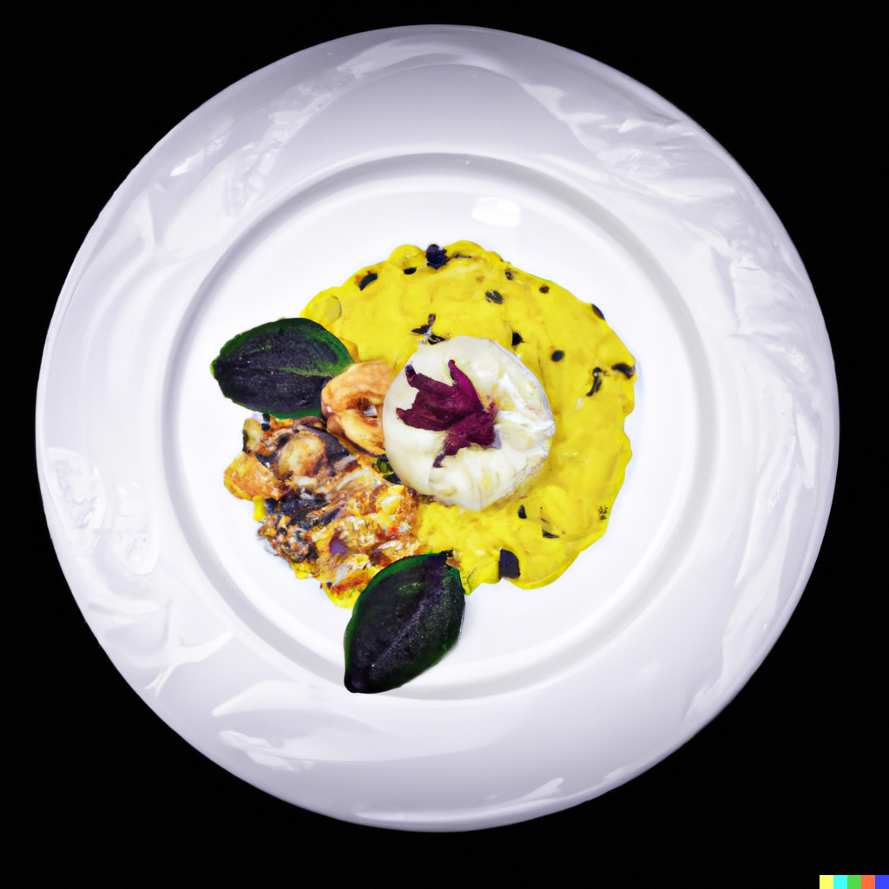

<!DOCTYPE html>
<html lang="en">

<head>
  <meta charset="UTF-8">
  <meta http-equiv="X-UA-Compatible" content="IE=edge">
  <meta name="viewport" content="width=device-width, initial-scale=1.0">
  <title>risotto Recipie</title>
</head>

<body>

</body>

</html>


<h1>Risotto Recipie</h1>

<h2>The 3 Michelin-starred chef creates a classic Italian seafood risotto dish but taking this dish and very much making
  their own.</h2>
<p>Skip the takeout with this risotto dish with some special ingredients</p>

<h3>Ingredients</h3>
<ul>
  <li>Carnaroli rice</li>
  <li>mixed seafood (such as clams, mussels, shrimp, and scallops)</li>
  <li> 1 onion, finely chopped</li>
  <li>1 garlic clove, minced</li>
  <li> 1 cup dry white wine</li>
  <li>1.5 liters fish stock</li>
  <li> 100g butter</li>
  <li> 100g grated Parmesan cheese</li>
  <li> 2 tablespoons extra-virgin olive oil</li>
  <li>Salt and pepper to taste</li>
</ul>

<h3>Instructions:</h3>

<ol>
  <li>oil in a large saucepan over medium heat. Add the onion and garlic and cook until softened.</li>
  <li>Add the rice to the saucepan and stir to coat with the oil.</li>
  <li>Add the white wine and cook, stirring constantly, until it has evaporated. </li>
  <li>Begin adding the fish stock to the saucepan, one ladleful at a time, stirring constantly until the liquid is
    absorbed, before adding more.</li>
  <li>After about 10 minutes, add the mixed seafood to the saucepan and continue adding stock and stirring until the
    rice
    is
    cooked through and the seafood is cooked.</li>
  <li>Remove the saucepan from the heat and stir in the butter and grated Parmesan cheese until the risotto is creamy
    and
    well combined.</li>
  <li>Season with salt and pepper to taste.</li>
  <li>Serve the risotto immediately, garnished with extra Parmesan cheese if desired.</li>
</ol>

<a href="../index.html"> Go To Home Page</a>